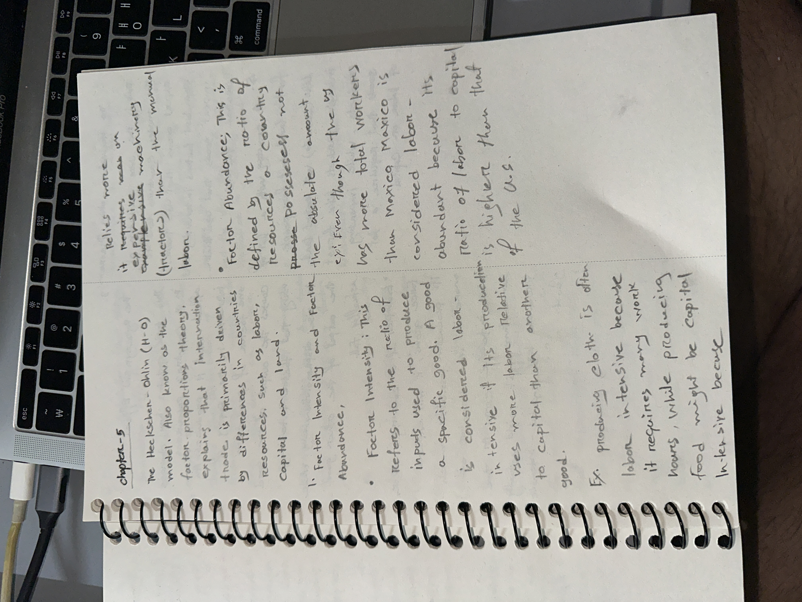

Based on Chapter 5 of Paul Krugman's International Trade: Theory and Policy, the Heckscher-Ohlin framework expands significantly on simpler trade paradigms by modeling multiple factors of production: **Capital ($K$)** and **Labor ($L$)**[cite: 2]. It uncovers how relative resource scarcity across political borders structurally shapes global trade vectors and alters the internal distribution of national wealth[cite: 2].
The Ricardian Model: Built as a one-factor economy where labor ($L$) is the sole input[cite: 2]. Comparative advantage is driven entirely by international differences in labor productivity (technological differences), resulting in a straight-line PPF with a constant opportunity cost[cite: 2].
The Heckscher-Ohlin Model: Built as a multi-factor economy (typically a $2 \times 2 \times 2$ framework: two countries, two goods, and two mobile factors—Capital $K$ and Labor $L$)[cite: 2]. Comparative advantage is driven by the interaction between a nation's resource endowments (factor abundance) and the industry's production technology (factor intensity)[cite: 2].
Because inputs cannot perfectly substitute for one another across distinct manufacturing sectors, the Heckscher-Ohlin model features a curved production frontier displaying an increasing opportunity cost profile[cite: 2].
Trade Patterns: The Ricardian model predicts that a country will export goods where it has an absolute productivity edge[cite: 2]. The Heckscher-Ohlin model predicts that a country will export goods that intensively use its abundant factor and import goods that use its scarce factor[cite: 2].
Income Distribution: In the Ricardian framework, trade benefits every worker because labor is mobile and homogeneous[cite: 2]. Conversely, the Heckscher-Ohlin model predicts long-run domestic conflict: trade systematically benefits the owners of a country's abundant factor but hurts the owners of its scarce factor[cite: 2].Unlike alternative trade frameworks, Heckscher-Ohlin proves that trade liberalization creates concentrated domestic winners and losers—systematically decreasing the real income of scarce resource providers while boosting abundant capital owners[cite: 2].
